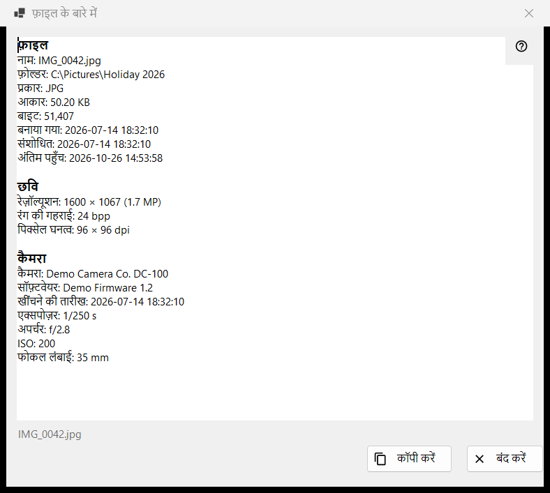
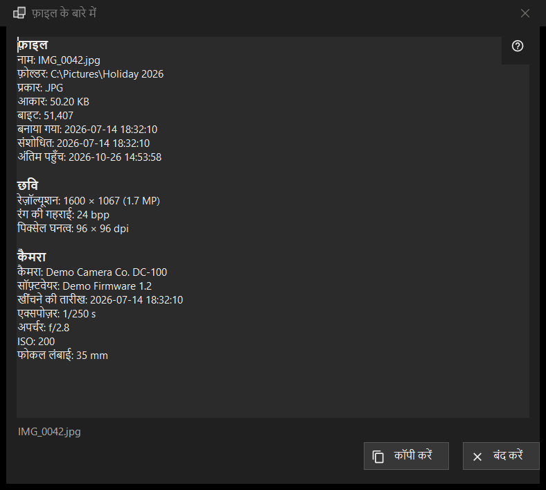

फ़ाइल के बारे में
यह किस लिए है
स्क्रीन पर दिख रही फ़ाइल के बारे में प्रोग्राम जो जानता है उसकी केवल-पढ़ने वाली झलक: फ़ाइल खुद, कैमरा डेटा के साथ चित्र, दस्तावेज़, और ऑडियो व वीडियो ट्रैक। यह पहले पैनल के i आइटम से, या व्यूअर मेनू के फ़ाइल ब्लॉक में फ़ाइल के बारे में से खुलती है, और फ़ाइल को वैसा ही बताती है जैसी वह क्लिक के क्षण पर थी।


इस क्रम में
- व्यूअर में कोई फ़ाइल दिखाएँ।
- पहले पैनल के i आइटम पर क्लिक करें, या मेनू में फ़ाइल के बारे में चुनें।
- थोड़ा रुकें: स्टेटस बार में फ़ाइल का मेटाडेटा पढ़ा जा रहा है.. लिखा आता है और पंक्तियाँ भरती जाती हैं।
- ब्लॉक पढ़ें, जो चाहिए उसे चुनें, और पूरा पाठ क्लिपबोर्ड पर रखने के लिए कॉपी करें दबाएँ।
- बंद करें दबाएँ या Esc।
तत्व
फ़ाइल
हर फ़ाइल में यह ब्लॉक होता है: नाम, फ़ोल्डर, प्रकार, आकार, बाइट, बनाया गया, संशोधित, अंतिम पहुँच और विशेषताएँ। जिस पंक्ति में दिखाने को कुछ नहीं होता वह छोड़ दी जाती है। अगर कोई फ़ाइल खुली नहीं है तो स्टेटस बार में कोई फ़ाइल चयनित नहीं है लिखा आता है; संग्रह की अस्थायी प्रति, दूरस्थ पता या गायब हो चुकी फ़ाइल पर फ़ाइल उपलब्ध नहीं है आता है, और कोई विंडो नहीं खुलती।
छवि
चित्र के लिए: रेज़ॉल्यूशन वैसा जैसा दिखाया जाता है (फ़ोन की करवट में सहेजी फ़ोटो सीधे आकार में पढ़ी जाती है), रंग की गहराई और पिक्सेल घनत्व, अगर फ़ाइल उन्हें दर्ज करती है।
कैमरा
फ़ोटो के EXIF डेटा से पढ़ा जाता है: कैमरा, सॉफ़्टवेयर, खींचने की तारीख, एक्सपोज़र, अपर्चर, ISO, फोकल लंबाई और लेखक। निर्देशांक तभी दिखते हैं जब फ़ोटो में GPS डेटा हो, और कॉपी करें उन्हें भी शामिल करता है, इसलिए साझा करने से पहले पाठ जाँच लें।
दस्तावेज़
टेक्स्ट फ़ाइल के लिए: पंक्तियाँ, शब्द, अक्षर और एन्कोडिंग, साथ में फ़ाइल का केवल एक हिस्सा पढ़ा गया, जब फ़ाइल इतनी बड़ी हो कि पूरी न पढ़ी जा सके। ई-बुक के लिए: नाम और लेखक। PDF के लिए: पृष्ठ।
मीडिया, वीडियो और ऑडियो
ऑडियो और वीडियो फ़ाइलों के लिए टैग (नाम, कलाकार, एल्बम, वर्ष, ट्रैक, शैली, निर्देशक, शृंखला, सीज़न, एपिसोड, अवधि) और हर प्रकार का पहला ट्रैक (वीडियो: रेज़ॉल्यूशन, प्रति सेकंड फ़्रेम, कोडेक, बिटरेट; ऑडियो: कोडेक, चैनल, सैंपल रेट, बिटरेट) बाकी जानकारी के कुछ पल बाद जुड़ते हैं, जब मीडिया इंजन पढ़ना पूरा कर लेता है। विंडो इसके लिए कभी नहीं रुकती। नेटवर्क स्ट्रीम के लिए ट्रैक की पंक्तियाँ नहीं मिलतीं।
कॉपी करें और बंद करें
कॉपी करें पूरा पाठ क्लिपबोर्ड पर रख देता है और स्टेटस बार में क्लिपबोर्ड पर कॉपी हो गया लिखा आता है; अगर कोई और प्रोग्राम क्लिपबोर्ड को रोके हुए है तो वह भी बताया जाता है और आप कॉपी करें फिर दबा सकते हैं। Ctrl+C से कॉपी किया गया चयन भी काम करता है। अगर कुछ पढ़ा नहीं जा सका, तो बॉक्स में फ़ाइल की जानकारी पढ़ी नहीं जा सकी। लिखा होता है। बटनों के पास स्टेटस बार में फ़ाइल का नाम दिखता है। दूसरी फ़ाइल पर जाने से यह विंडो नहीं बदलती: नई फ़ाइल के लिए i पर फिर क्लिक करें।